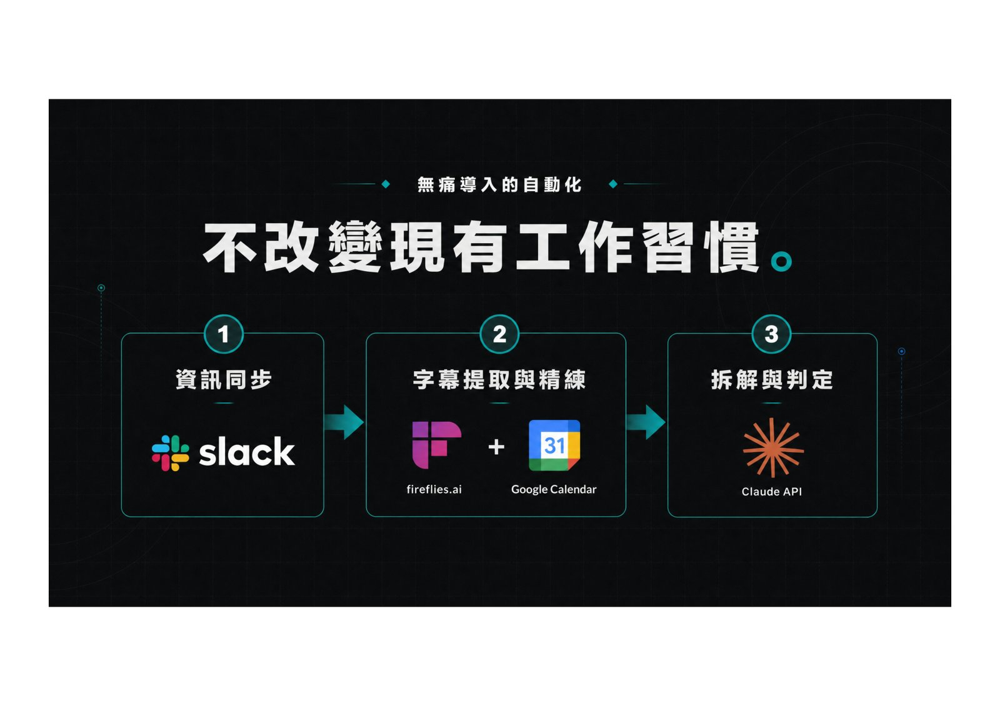

摘要
由於原始 PDF 缺乏可抽取的文字層，本篇內容主要依據提供的補充說明整理：Hahow for Business 產品總監高玉璚分享團隊如何結合 Slack、Fireflies.ai 會議逐字稿轉錄、Google 日曆與 Claude API，打造一套自動化流程，將教練╱培訓對話自動擷取、轉錄並分析成結構化的能力數據，藉此重建企業培訓的驗證機制。
重點整理
- 核心痛點是企業培訓過程中的教練╱指導對話難以量化驗證學習成效
- 解法整合 Slack、Fireflies.ai（會議逐字稿轉錄）、Google Calendar 與 Claude API 四個工具
- 流程會自動擷取、轉錄培訓╱教練對話，再交由 Claude API 分析並轉換為結構化能力數據
- 目標是把原本零散的會議逐字稿，重建為企業培訓驗證所需的可量化資料
重點圖片／架構圖

培訓驗證的痛點
企業培訓與教練指導過程中的對話內容往往只留下零散的逐字稿或口頭紀錄，難以被系統化地驗證學員能力是否真正提升。Hahow for Business 團隊希望找到方法，把這些日常發生的培訓對話轉換成可供分析與驗證的結構化資料。
整合工具打造自動化管線
團隊的解法是串接 Slack、Fireflies.ai、Google Calendar 與 Claude API 四項工具，形成一條自動化管線：由 Google Calendar 掌握培訓╱教練會議排程，Fireflies.ai 負責將會議內容自動轉錄成逐字稿，Slack 作為通知與協作介面，最終交由 Claude API 進行語意分析。
從逐字稿到能力數據
這套管線的核心價值在於把非結構化的會議逐字稿，透過 Claude API 的語意理解能力，轉換成結構化的能力數據，讓企業得以量化評估培訓╱教練對話中呈現的能力表現，而非僅停留在「有沒有開會」的層次。
對企業培訓驗證的意義
透過自動化擷取與分析培訓對話，Hahow for Business 團隊嘗試重建企業培訓的驗證機制，讓原本仰賴人工整理與主觀判斷的培訓成效評估，轉變為有資料佐證、可追蹤的能力驗證流程。